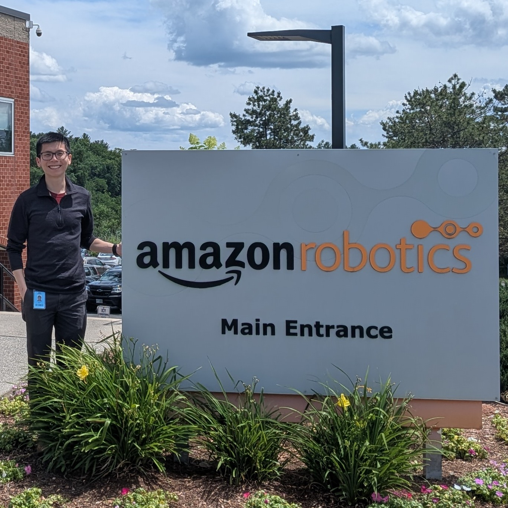
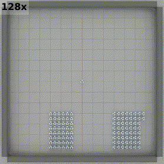
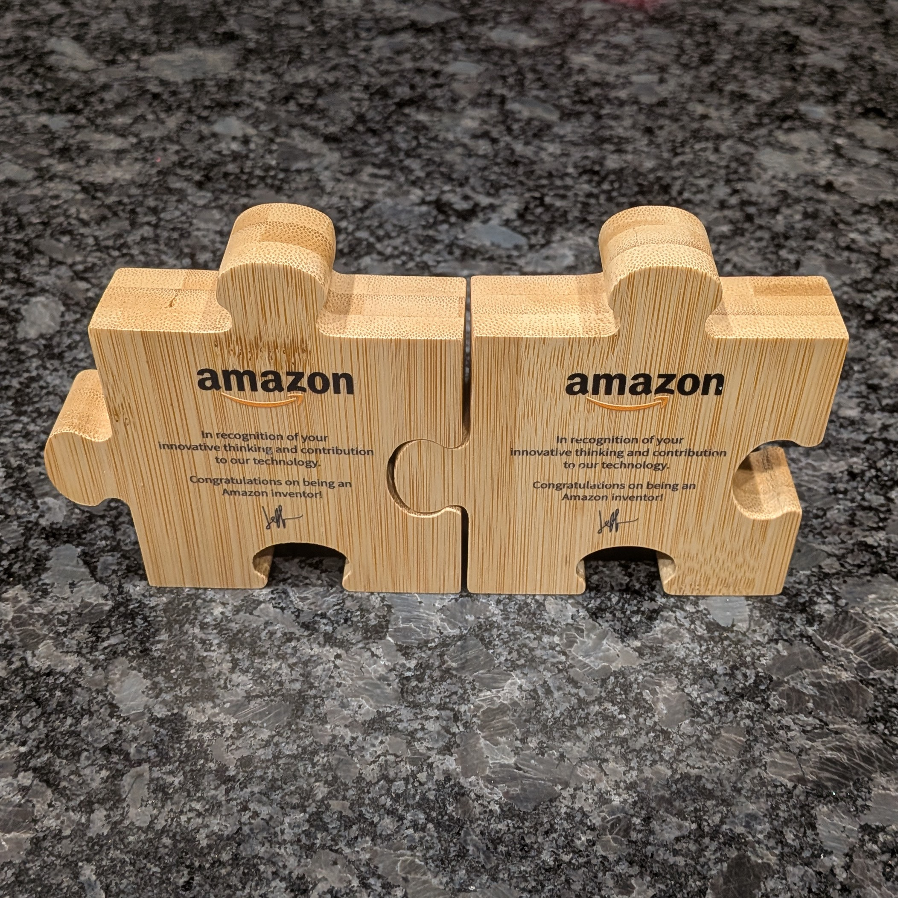
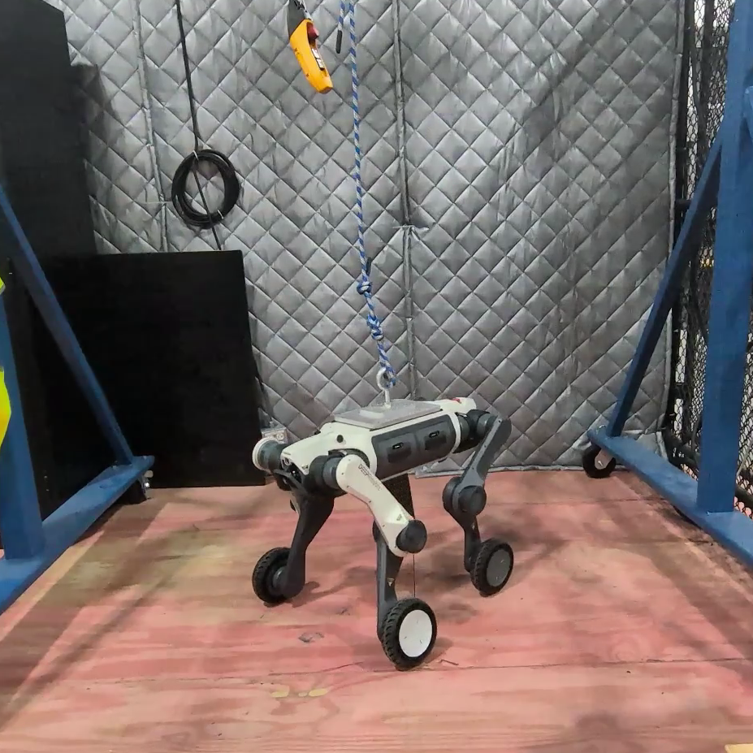
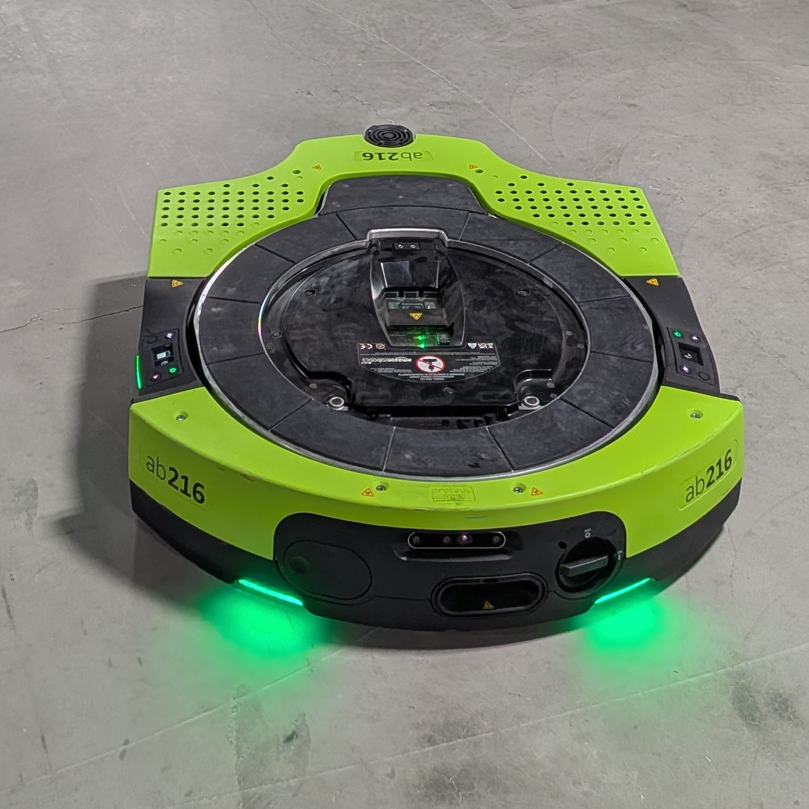

Amazon Robotics
Postdoctoral Scientist

Upon my PhD graduation, I joined Amazon Robotics as a postdoctoral scientist in June 2025 on a one-year contract. During this time, I designed a self-assembly algorithm for decentralized robots, trained RL locomotion policies for quadrupedal robots, and developed a self-reflecting, LLM-agent-orchestrated framework to improve autonomous robot recovery rates. My efforts resulted in patent submissions and a DARS 2026 conference paper.
Background
Amazon Robotics, formerly Kiva Systems (acquired in 2012), develops automated solutions to support the logistical demands of Amazon. This includes robotic systems that include mobile and manipulation robots, designed to handle the immense volume of packages that flow through Amazon's fulfillment network. Accordingly, scalability is key to the company's work: "How does one provide scalable and efficient automation in warehouses to enable the conveniences guaranteed to Amazon customers?" Headquartered in North Reading, MA, Amazon Robotics researches, builds, and implements novel approaches to address such scalability problems.
My Work and Experience




I started my role on a project to develop algorithms for modular robots that are equipped with unsophisticated compute resources. My main accomplishment in that project was the Huddle self-assembly algorithm, which was published as DARS 2026 conference paper. The rule-based algorithm relies on local interactions to enable parallel shape assembly with global reachability and hole-free guarantees. In essence, based on the perimeter coordinates of a desired shape (assumed to be hole-free), the algorithm runs onboard each robot to decide which of the robot's walls to signal. These signals effectively behave like beacons (similar to lighthouses) that attract and guide nearby robots to attach, thus "growing" the assembly. Additionally, I developed a factor graph-based Gaussian belief propagation algorithm to enable distributed localization for the modular robots. Unfortunately, before I could test and implement it on the actual robots, the project was shelved due to a reorganization.
Then, I joined a project to build quadrupedal robots for package delivery, which encountered a significant challenge in developing RL locomotion models: the trained models yielded high training rewards and passed sim-to-sim validation (in MuJoCo), but performed poorly on the actual quadrupedal robot; the robot was unsteady even when given simple commands. My contribution addresses this problem directly by implementing Regularized Online Adaptation (ROA), an adaptation module (encoder) that learns from a privileged encoder to output latent environmental extrinsics. The extrinsics condition the locomotion policy as an explicit way to provide environmental information to improve robustness. To scalably train and implement ROA, I set up a Dockerized multi-GPU training workflow, with experiment tracking using MLflow, resulting in a more robust locomotion behavior on the real quadruped. Due to Amazon's acquisition of RIVR, however, the project was shelved soon after.
Subsequently, I worked on a research project collaborating with the software team behind the Proteus autonomous robot. Specifically, I investigated a self-reflection-driven approach to improve the agentic self-recovery of Proteus robots. Instead of fine-tuning the foundation LLMs, I implemented a proof-of-concept to store self-reflections in a knowledge base that can be accessed via Retrieval-augmented generation (RAG). Using a contrived stuck scenario, my simulated experiments found that while agent self-reflection outperformed hand-written human heuristics, combining both worked best.